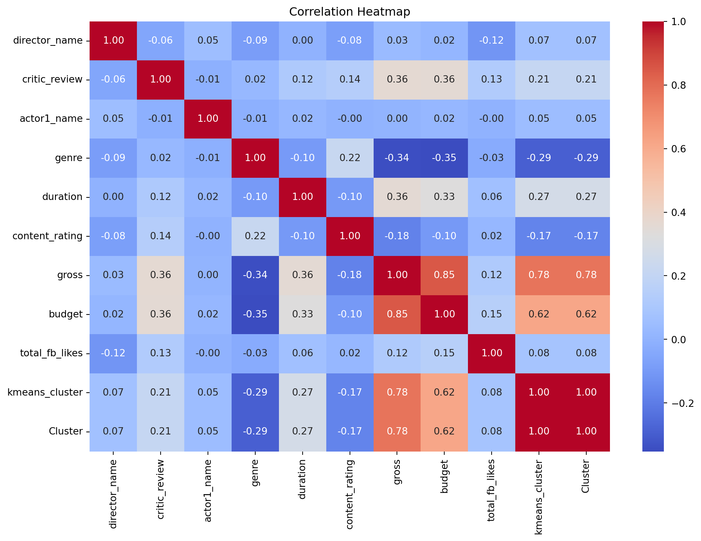

import pandas as pd
import numpy as np
import matplotlib.pyplot as pl
import seaborn as sns
from sklearn.preprocessing import LabelEncoder
from sklearn.preprocessing import MinMaxScaler
from sklearn.cluster import KMeans
from sklearn.metrics import silhouette_score
from sklearn.cluster import KMeans
from sklearn.decomposition import PCA
from sklearn.ensemble import RandomForestClassifier
from sklearn.model_selection import train_test_splitImporting the required libraries
Importing the data set:
data=pd.read_csv('movie_metadata.csv')
data.head()| color | director_name | num_critic_for_reviews | duration | director_facebook_likes | actor_3_facebook_likes | actor_2_name | actor_1_facebook_likes | gross | genres | ... | num_user_for_reviews | language | country | content_rating | budget | title_year | actor_2_facebook_likes | imdb_score | aspect_ratio | movie_facebook_likes | |
|---|---|---|---|---|---|---|---|---|---|---|---|---|---|---|---|---|---|---|---|---|---|
| 0 | Color | James Cameron | 723.0 | 178.0 | 0.0 | 855.0 | Joel David Moore | 1000.0 | 760505847.0 | Action|Adventure|Fantasy|Sci-Fi | ... | 3054.0 | English | USA | PG-13 | 237000000.0 | 2009.0 | 936.0 | 7.9 | 1.78 | 33000 |
| 1 | Color | Gore Verbinski | 302.0 | 169.0 | 563.0 | 1000.0 | Orlando Bloom | 40000.0 | 309404152.0 | Action|Adventure|Fantasy | ... | 1238.0 | English | USA | PG-13 | 300000000.0 | 2007.0 | 5000.0 | 7.1 | 2.35 | 0 |
| 2 | Color | Sam Mendes | 602.0 | 148.0 | 0.0 | 161.0 | Rory Kinnear | 11000.0 | 200074175.0 | Action|Adventure|Thriller | ... | 994.0 | English | UK | PG-13 | 245000000.0 | 2015.0 | 393.0 | 6.8 | 2.35 | 85000 |
| 3 | Color | Christopher Nolan | 813.0 | 164.0 | 22000.0 | 23000.0 | Christian Bale | 27000.0 | 448130642.0 | Action|Thriller | ... | 2701.0 | English | USA | PG-13 | 250000000.0 | 2012.0 | 23000.0 | 8.5 | 2.35 | 164000 |
| 4 | NaN | Doug Walker | NaN | NaN | 131.0 | NaN | Rob Walker | 131.0 | NaN | Documentary | ... | NaN | NaN | NaN | NaN | NaN | NaN | 12.0 | 7.1 | NaN | 0 |
5 rows × 28 columns
Finding out the total elements, frequency and the most frequent data from our data set:
data.describe(include='object')| color | director_name | actor_2_name | genres | actor_1_name | movie_title | actor_3_name | plot_keywords | movie_imdb_link | language | country | content_rating | |
|---|---|---|---|---|---|---|---|---|---|---|---|---|
| count | 5024 | 4939 | 5030 | 5043 | 5036 | 5043 | 5020 | 4890 | 5043 | 5029 | 5038 | 4740 |
| unique | 2 | 2398 | 3032 | 914 | 2097 | 4917 | 3521 | 4760 | 4919 | 46 | 65 | 18 |
| top | Color | Steven Spielberg | Morgan Freeman | Drama | Robert De Niro | Ben-Hur | John Heard | based on novel | http://www.imdb.com/title/tt0232500/?ref_=fn_t... | English | USA | R |
| freq | 4815 | 26 | 20 | 236 | 49 | 3 | 8 | 4 | 3 | 4704 | 3807 | 2118 |
Selecting the important features that we need and converting them into the columns:
movie= data[["director_name",'num_critic_for_reviews',"actor_1_name","genres", "duration","actor_1_facebook_likes","actor_2_facebook_likes","content_rating","actor_3_facebook_likes","gross","budget"]].copy()
movie.columns = ["director_name",'critic_review',"actor1_name","genre", "duration","actor1_fb_likes","actor2_fb_likes","content_rating","actor3_fb_likes", "gross","budget"]
movie.head()| director_name | critic_review | actor1_name | genre | duration | actor1_fb_likes | actor2_fb_likes | content_rating | actor3_fb_likes | gross | budget | |
|---|---|---|---|---|---|---|---|---|---|---|---|
| 0 | James Cameron | 723.0 | CCH Pounder | Action|Adventure|Fantasy|Sci-Fi | 178.0 | 1000.0 | 936.0 | PG-13 | 855.0 | 760505847.0 | 237000000.0 |
| 1 | Gore Verbinski | 302.0 | Johnny Depp | Action|Adventure|Fantasy | 169.0 | 40000.0 | 5000.0 | PG-13 | 1000.0 | 309404152.0 | 300000000.0 |
| 2 | Sam Mendes | 602.0 | Christoph Waltz | Action|Adventure|Thriller | 148.0 | 11000.0 | 393.0 | PG-13 | 161.0 | 200074175.0 | 245000000.0 |
| 3 | Christopher Nolan | 813.0 | Tom Hardy | Action|Thriller | 164.0 | 27000.0 | 23000.0 | PG-13 | 23000.0 | 448130642.0 | 250000000.0 |
| 4 | Doug Walker | NaN | Doug Walker | Documentary | NaN | 131.0 | 12.0 | NaN | NaN | NaN | NaN |
To prepare the data to be machine learning ready, let’s first identify the missing values:
movie.apply(pd.isnull).sum()/movie.shape[0]director_name 0.020623
critic_review 0.009915
actor1_name 0.001388
genre 0.000000
duration 0.002974
actor1_fb_likes 0.001388
actor2_fb_likes 0.002578
content_rating 0.060083
actor3_fb_likes 0.004561
gross 0.175292
budget 0.097561
dtype: float64Dropping the missing values meaning deleting the entire row of the ones which contains missing data:
movie.dropna(axis=0, inplace=True)
movie| director_name | critic_review | actor1_name | genre | duration | actor1_fb_likes | actor2_fb_likes | content_rating | actor3_fb_likes | gross | budget | |
|---|---|---|---|---|---|---|---|---|---|---|---|
| 0 | James Cameron | 723.0 | CCH Pounder | Action|Adventure|Fantasy|Sci-Fi | 178.0 | 1000.0 | 936.0 | PG-13 | 855.0 | 760505847.0 | 237000000.0 |
| 1 | Gore Verbinski | 302.0 | Johnny Depp | Action|Adventure|Fantasy | 169.0 | 40000.0 | 5000.0 | PG-13 | 1000.0 | 309404152.0 | 300000000.0 |
| 2 | Sam Mendes | 602.0 | Christoph Waltz | Action|Adventure|Thriller | 148.0 | 11000.0 | 393.0 | PG-13 | 161.0 | 200074175.0 | 245000000.0 |
| 3 | Christopher Nolan | 813.0 | Tom Hardy | Action|Thriller | 164.0 | 27000.0 | 23000.0 | PG-13 | 23000.0 | 448130642.0 | 250000000.0 |
| 5 | Andrew Stanton | 462.0 | Daryl Sabara | Action|Adventure|Sci-Fi | 132.0 | 640.0 | 632.0 | PG-13 | 530.0 | 73058679.0 | 263700000.0 |
| ... | ... | ... | ... | ... | ... | ... | ... | ... | ... | ... | ... |
| 5033 | Shane Carruth | 143.0 | Shane Carruth | Drama|Sci-Fi|Thriller | 77.0 | 291.0 | 45.0 | PG-13 | 8.0 | 424760.0 | 7000.0 |
| 5034 | Neill Dela Llana | 35.0 | Ian Gamazon | Thriller | 80.0 | 0.0 | 0.0 | Not Rated | 0.0 | 70071.0 | 7000.0 |
| 5035 | Robert Rodriguez | 56.0 | Carlos Gallardo | Action|Crime|Drama|Romance|Thriller | 81.0 | 121.0 | 20.0 | R | 6.0 | 2040920.0 | 7000.0 |
| 5037 | Edward Burns | 14.0 | Kerry Bishé | Comedy|Drama | 95.0 | 296.0 | 205.0 | Not Rated | 133.0 | 4584.0 | 9000.0 |
| 5042 | Jon Gunn | 43.0 | John August | Documentary | 90.0 | 86.0 | 23.0 | PG | 16.0 | 85222.0 | 1100.0 |
3833 rows × 11 columns
Calculating the total facebook likes by summing the three related columns:
movie['total_fb_likes'] = movie['actor1_fb_likes'] + movie['actor2_fb_likes'] + movie['actor3_fb_likes']
movie = movie.drop(['actor1_fb_likes', 'actor2_fb_likes', 'actor3_fb_likes'], axis=1)
movie.head()| director_name | critic_review | actor1_name | genre | duration | content_rating | gross | budget | total_fb_likes | |
|---|---|---|---|---|---|---|---|---|---|
| 0 | James Cameron | 723.0 | CCH Pounder | Action|Adventure|Fantasy|Sci-Fi | 178.0 | PG-13 | 760505847.0 | 237000000.0 | 2791.0 |
| 1 | Gore Verbinski | 302.0 | Johnny Depp | Action|Adventure|Fantasy | 169.0 | PG-13 | 309404152.0 | 300000000.0 | 46000.0 |
| 2 | Sam Mendes | 602.0 | Christoph Waltz | Action|Adventure|Thriller | 148.0 | PG-13 | 200074175.0 | 245000000.0 | 11554.0 |
| 3 | Christopher Nolan | 813.0 | Tom Hardy | Action|Thriller | 164.0 | PG-13 | 448130642.0 | 250000000.0 | 73000.0 |
| 5 | Andrew Stanton | 462.0 | Daryl Sabara | Action|Adventure|Sci-Fi | 132.0 | PG-13 | 73058679.0 | 263700000.0 | 1802.0 |
Using the label encoder to convert the names into the numerals which our model thrives on:
label_encoder = LabelEncoder()
movie['director_name'] = label_encoder.fit_transform(movie['director_name'])
movie['actor1_name'] = label_encoder.fit_transform(movie['actor1_name'])
movie['content_rating'] = label_encoder.fit_transform(movie['content_rating'])
movie['genre'] = label_encoder.fit_transform(movie['genre'])
movie.tail()| director_name | critic_review | actor1_name | genre | duration | content_rating | gross | budget | total_fb_likes | |
|---|---|---|---|---|---|---|---|---|---|
| 5033 | 1465 | 143.0 | 1266 | 714 | 77.0 | 7 | 424760.0 | 7000.0 | 344.0 |
| 5034 | 1164 | 35.0 | 545 | 749 | 80.0 | 5 | 70071.0 | 7000.0 | 0.0 |
| 5035 | 1379 | 56.0 | 201 | 170 | 81.0 | 9 | 2040920.0 | 7000.0 | 147.0 |
| 5037 | 428 | 14.0 | 784 | 511 | 95.0 | 5 | 4584.0 | 9000.0 | 634.0 |
| 5042 | 810 | 43.0 | 680 | 631 | 90.0 | 6 | 85222.0 | 1100.0 | 125.0 |
Let’s only take the movies which we assume that were successful:
movie= movie[movie['gross'] > 3 * movie['budget']]
movie| director_name | critic_review | actor1_name | genre | duration | content_rating | gross | budget | total_fb_likes | |
|---|---|---|---|---|---|---|---|---|---|
| 0 | 637 | 723.0 | 192 | 92 | 178.0 | 7 | 760505847.0 | 237000000.0 | 2791.0 |
| 26 | 637 | 315.0 | 845 | 705 | 194.0 | 7 | 658672302.0 | 200000000.0 | 43794.0 |
| 29 | 272 | 644.0 | 186 | 107 | 124.0 | 7 | 652177271.0 | 150000000.0 | 6000.0 |
| 100 | 1353 | 187.0 | 1098 | 187 | 106.0 | 7 | 144512310.0 | 38000000.0 | 41000.0 |
| 186 | 478 | 502.0 | 634 | 391 | 146.0 | 7 | 424645577.0 | 130000000.0 | 48523.0 |
| ... | ... | ... | ... | ... | ... | ... | ... | ... | ... |
| 5027 | 629 | 64.0 | 456 | 639 | 90.0 | 5 | 673780.0 | 10000.0 | 5.0 |
| 5033 | 1465 | 143.0 | 1266 | 714 | 77.0 | 7 | 424760.0 | 7000.0 | 344.0 |
| 5034 | 1164 | 35.0 | 545 | 749 | 80.0 | 5 | 70071.0 | 7000.0 | 0.0 |
| 5035 | 1379 | 56.0 | 201 | 170 | 81.0 | 9 | 2040920.0 | 7000.0 | 147.0 |
| 5042 | 810 | 43.0 | 680 | 631 | 90.0 | 6 | 85222.0 | 1100.0 | 125.0 |
678 rows × 9 columns
To make our data consistent for each columns so that they can be used to compare to get the required results, we use MInMaxScalar from sklearn library:
columns = ["duration","critic_review","director_name","genre","total_fb_likes","actor1_name","content_rating"]
scaler = MinMaxScaler()
movie[columns] = scaler.fit_transform(movie[columns])
movie.head()| director_name | critic_review | actor1_name | genre | duration | content_rating | gross | budget | total_fb_likes | |
|---|---|---|---|---|---|---|---|---|---|
| 0 | 0.373011 | 1.000000 | 0.127907 | 0.121495 | 0.654762 | 0.636364 | 760505847.0 | 237000000.0 | 0.004261 |
| 26 | 0.373011 | 0.433333 | 0.574555 | 0.939920 | 0.750000 | 0.636364 | 658672302.0 | 200000000.0 | 0.066861 |
| 29 | 0.157926 | 0.890278 | 0.123803 | 0.141522 | 0.333333 | 0.636364 | 652177271.0 | 150000000.0 | 0.009160 |
| 100 | 0.794932 | 0.255556 | 0.747606 | 0.248331 | 0.226190 | 0.636364 | 144512310.0 | 38000000.0 | 0.062595 |
| 186 | 0.279316 | 0.693056 | 0.430233 | 0.520694 | 0.464286 | 0.636364 | 424645577.0 | 130000000.0 | 0.074081 |
movie['genre'].value_counts()genre
0.680908 40
0.851802 38
0.640854 36
0.714286 31
0.778371 24
..
0.638184 1
0.789052 1
0.871829 1
0.958611 1
0.998665 1
Name: count, Length: 220, dtype: int64Before performing the K-means Clustering, we should examine which of the K values is better for us.
We can analyze it with the help of the elbow method:
inertia = []
for k in range(1, 11):
kmeans = KMeans(n_clusters=k, random_state=0)
kmeans.fit(movie)
inertia.append(kmeans.inertia_)
pl.figure(figsize=(8, 5))
pl.plot(range(1, 11), inertia, marker='o')
pl.xlabel('Number of Clusters (K)')
pl.ylabel('Inertia')
pl.title('Elbow Method for Optimal K')
pl.grid()
pl.show()C:\Users\poude\AppData\Local\Programs\Python\Python311\Lib\site-packages\sklearn\cluster\_kmeans.py:1416: FutureWarning: The default value of `n_init` will change from 10 to 'auto' in 1.4. Set the value of `n_init` explicitly to suppress the warning
super()._check_params_vs_input(X, default_n_init=10)
C:\Users\poude\AppData\Local\Programs\Python\Python311\Lib\site-packages\sklearn\cluster\_kmeans.py:1416: FutureWarning: The default value of `n_init` will change from 10 to 'auto' in 1.4. Set the value of `n_init` explicitly to suppress the warning
super()._check_params_vs_input(X, default_n_init=10)
C:\Users\poude\AppData\Local\Programs\Python\Python311\Lib\site-packages\sklearn\cluster\_kmeans.py:1416: FutureWarning: The default value of `n_init` will change from 10 to 'auto' in 1.4. Set the value of `n_init` explicitly to suppress the warning
super()._check_params_vs_input(X, default_n_init=10)
C:\Users\poude\AppData\Local\Programs\Python\Python311\Lib\site-packages\sklearn\cluster\_kmeans.py:1416: FutureWarning: The default value of `n_init` will change from 10 to 'auto' in 1.4. Set the value of `n_init` explicitly to suppress the warning
super()._check_params_vs_input(X, default_n_init=10)
C:\Users\poude\AppData\Local\Programs\Python\Python311\Lib\site-packages\sklearn\cluster\_kmeans.py:1416: FutureWarning: The default value of `n_init` will change from 10 to 'auto' in 1.4. Set the value of `n_init` explicitly to suppress the warning
super()._check_params_vs_input(X, default_n_init=10)
C:\Users\poude\AppData\Local\Programs\Python\Python311\Lib\site-packages\sklearn\cluster\_kmeans.py:1416: FutureWarning: The default value of `n_init` will change from 10 to 'auto' in 1.4. Set the value of `n_init` explicitly to suppress the warning
super()._check_params_vs_input(X, default_n_init=10)
C:\Users\poude\AppData\Local\Programs\Python\Python311\Lib\site-packages\sklearn\cluster\_kmeans.py:1416: FutureWarning: The default value of `n_init` will change from 10 to 'auto' in 1.4. Set the value of `n_init` explicitly to suppress the warning
super()._check_params_vs_input(X, default_n_init=10)
C:\Users\poude\AppData\Local\Programs\Python\Python311\Lib\site-packages\sklearn\cluster\_kmeans.py:1416: FutureWarning: The default value of `n_init` will change from 10 to 'auto' in 1.4. Set the value of `n_init` explicitly to suppress the warning
super()._check_params_vs_input(X, default_n_init=10)
C:\Users\poude\AppData\Local\Programs\Python\Python311\Lib\site-packages\sklearn\cluster\_kmeans.py:1416: FutureWarning: The default value of `n_init` will change from 10 to 'auto' in 1.4. Set the value of `n_init` explicitly to suppress the warning
super()._check_params_vs_input(X, default_n_init=10)
C:\Users\poude\AppData\Local\Programs\Python\Python311\Lib\site-packages\sklearn\cluster\_kmeans.py:1416: FutureWarning: The default value of `n_init` will change from 10 to 'auto' in 1.4. Set the value of `n_init` explicitly to suppress the warning
super()._check_params_vs_input(X, default_n_init=10)To confirm the above results, let’s also find out the Silhouette Score and the related plots:
silhouette_scores = []
for k in range(2, 11):
kmeans = KMeans(n_clusters=k, random_state=0)
kmeans.fit(movie) # Use the scaled features
silhouette_scores.append(silhouette_score(movie, kmeans.labels_))
pl.figure(figsize=(8, 5))
pl.plot(range(2, 11), silhouette_scores, marker='o')
pl.xlabel('Number of Clusters (K)')
pl.ylabel('Silhouette Score')
pl.title('Silhouette Score for Optimal K')
pl.grid()
pl.show()C:\Users\poude\AppData\Local\Programs\Python\Python311\Lib\site-packages\sklearn\cluster\_kmeans.py:1416: FutureWarning: The default value of `n_init` will change from 10 to 'auto' in 1.4. Set the value of `n_init` explicitly to suppress the warning
super()._check_params_vs_input(X, default_n_init=10)
C:\Users\poude\AppData\Local\Programs\Python\Python311\Lib\site-packages\sklearn\cluster\_kmeans.py:1416: FutureWarning: The default value of `n_init` will change from 10 to 'auto' in 1.4. Set the value of `n_init` explicitly to suppress the warning
super()._check_params_vs_input(X, default_n_init=10)
C:\Users\poude\AppData\Local\Programs\Python\Python311\Lib\site-packages\sklearn\cluster\_kmeans.py:1416: FutureWarning: The default value of `n_init` will change from 10 to 'auto' in 1.4. Set the value of `n_init` explicitly to suppress the warning
super()._check_params_vs_input(X, default_n_init=10)
C:\Users\poude\AppData\Local\Programs\Python\Python311\Lib\site-packages\sklearn\cluster\_kmeans.py:1416: FutureWarning: The default value of `n_init` will change from 10 to 'auto' in 1.4. Set the value of `n_init` explicitly to suppress the warning
super()._check_params_vs_input(X, default_n_init=10)
C:\Users\poude\AppData\Local\Programs\Python\Python311\Lib\site-packages\sklearn\cluster\_kmeans.py:1416: FutureWarning: The default value of `n_init` will change from 10 to 'auto' in 1.4. Set the value of `n_init` explicitly to suppress the warning
super()._check_params_vs_input(X, default_n_init=10)
C:\Users\poude\AppData\Local\Programs\Python\Python311\Lib\site-packages\sklearn\cluster\_kmeans.py:1416: FutureWarning: The default value of `n_init` will change from 10 to 'auto' in 1.4. Set the value of `n_init` explicitly to suppress the warning
super()._check_params_vs_input(X, default_n_init=10)
C:\Users\poude\AppData\Local\Programs\Python\Python311\Lib\site-packages\sklearn\cluster\_kmeans.py:1416: FutureWarning: The default value of `n_init` will change from 10 to 'auto' in 1.4. Set the value of `n_init` explicitly to suppress the warning
super()._check_params_vs_input(X, default_n_init=10)
C:\Users\poude\AppData\Local\Programs\Python\Python311\Lib\site-packages\sklearn\cluster\_kmeans.py:1416: FutureWarning: The default value of `n_init` will change from 10 to 'auto' in 1.4. Set the value of `n_init` explicitly to suppress the warning
super()._check_params_vs_input(X, default_n_init=10)
C:\Users\poude\AppData\Local\Programs\Python\Python311\Lib\site-packages\sklearn\cluster\_kmeans.py:1416: FutureWarning: The default value of `n_init` will change from 10 to 'auto' in 1.4. Set the value of `n_init` explicitly to suppress the warning
super()._check_params_vs_input(X, default_n_init=10)From the above two results, we can clearly see that K=2 works best for our model, so let’s use that value and fit K-means:
kmeans = KMeans(n_clusters=2, random_state=0)
kmeans.fit(movie)C:\Users\poude\AppData\Local\Programs\Python\Python311\Lib\site-packages\sklearn\cluster\_kmeans.py:1416: FutureWarning: The default value of `n_init` will change from 10 to 'auto' in 1.4. Set the value of `n_init` explicitly to suppress the warning
super()._check_params_vs_input(X, default_n_init=10)KMeans(n_clusters=2, random_state=0)In a Jupyter environment, please rerun this cell to show the HTML representation or trust the notebook.
On GitHub, the HTML representation is unable to render, please try loading this page with nbviewer.org.
KMeans(n_clusters=2, random_state=0)
cluster_labels = kmeans.labels_
movie['kmeans_cluster'] = cluster_labels
movie.head()| director_name | critic_review | actor1_name | genre | duration | content_rating | gross | budget | total_fb_likes | kmeans_cluster | |
|---|---|---|---|---|---|---|---|---|---|---|
| 0 | 0.373011 | 1.000000 | 0.127907 | 0.121495 | 0.654762 | 0.636364 | 760505847.0 | 237000000.0 | 0.004261 | 1 |
| 26 | 0.373011 | 0.433333 | 0.574555 | 0.939920 | 0.750000 | 0.636364 | 658672302.0 | 200000000.0 | 0.066861 | 1 |
| 29 | 0.157926 | 0.890278 | 0.123803 | 0.141522 | 0.333333 | 0.636364 | 652177271.0 | 150000000.0 | 0.009160 | 1 |
| 100 | 0.794932 | 0.255556 | 0.747606 | 0.248331 | 0.226190 | 0.636364 | 144512310.0 | 38000000.0 | 0.062595 | 0 |
| 186 | 0.279316 | 0.693056 | 0.430233 | 0.520694 | 0.464286 | 0.636364 | 424645577.0 | 130000000.0 | 0.074081 | 1 |
To visualize the clusters, we use Seaborn pair plot function:
sns.pairplot(movie, hue='kmeans_cluster', palette='Dark2')
pl.show()C:\Users\poude\AppData\Local\Programs\Python\Python311\Lib\site-packages\seaborn\axisgrid.py:123: UserWarning: The figure layout has changed to tight
self._figure.tight_layout(*args, **kwargs)
To see which features are important to us, we can use the correlation heatmap to compare the features:
new_movie = movie.copy()
new_movie['Cluster'] = cluster_labels
correlation_matrix = new_movie.corr()
pl.figure(figsize=(12, 8))
sns.heatmap(correlation_matrix, annot=True, cmap='coolwarm', fmt=".2f", cbar=True)
pl.title('Correlation Heatmap')
pl.show()
After getting the important features from the above plots, we now can reduce out multi-dimentional data into 2 dimensional data using PCA.
pca = PCA(n_components=2)
movie_pca = pca.fit_transform(movie)
kmeans.fit(movie_pca)
cluster_labels = kmeans.labels_
pl.scatter(movie_pca[:, 0], movie_pca[:, 1], c=cluster_labels, cmap='viridis')
pl.scatter(kmeans.cluster_centers_[:, 0], kmeans.cluster_centers_[:, 1], s=300, c='red', label='Cluster Centers')
pl.legend()
pl.title('K-means Clustering')
pl.xlabel('PCA Component 1')
pl.ylabel('PCA Component 2')
pl.show()C:\Users\poude\AppData\Local\Programs\Python\Python311\Lib\site-packages\sklearn\cluster\_kmeans.py:1416: FutureWarning: The default value of `n_init` will change from 10 to 'auto' in 1.4. Set the value of `n_init` explicitly to suppress the warning
super()._check_params_vs_input(X, default_n_init=10)Now, we can use Random Forest Classifier to determine which features really contribute to the success of the movie. But, before that we need to train our model by splitting our data into training data and testing data.
X = movie.drop(['kmeans_cluster'], axis=1)
y = movie['kmeans_cluster']
X_train, X_test, y_train, y_test = train_test_split(X, y, test_size=0.2, random_state=42)
rf_classifier = RandomForestClassifier()
rf_classifier.fit(X_train, y_train)
feature_importances = rf_classifier.feature_importances_
feature_importance_movie = pd.DataFrame({'Feature': X.columns, 'Importance': feature_importances})
feature_importance_movie = feature_importance_movie.sort_values(by='Importance', ascending=False)
print(feature_importance_movie) Feature Importance
6 gross 0.699982
7 budget 0.193615
3 genre 0.024820
4 duration 0.021908
8 total_fb_likes 0.019110
1 critic_review 0.013473
2 actor1_name 0.010217
0 director_name 0.009468
5 content_rating 0.007406Visualizing this:
pl.figure(figsize=(10, 6))
pl.barh(feature_importance_movie['Feature'], feature_importance_movie['Importance'], color='skyblue')
pl.xlabel('Feature Importance')
pl.ylabel('Features')
pl.title('Feature Importance Scores')
pl.gca().invert_yaxis() # Invert the y-axis for better readability
pl.show()
From our analysis, apart from the obvious factors like gross lifetime collection of the movie and budget of the movie, the most important factor that determines the success of the Hollywood movies is the Genre of the movie.
This makes complete sense to me because personally me and my friend circles also usually prefer to watch Sci-fi movies over other genre movies. Thus, we can assume that people generally like certain kind of Genre in a movie.